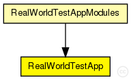

This documentation is released under the Creative Commons license
This documentation is released under the Creative Commons licenseSimple module of the real wolrd test application
Author: Bernhard Heep
The following diagram shows usage relationships between types. Unresolved types are missing from the diagram. Click here to see the full picture.
The following diagram shows inheritance relationships for this type. Unresolved types are missing from the diagram. Click here to see the full picture.
If a module type shows up more than once, that means it has been defined in more than one NED file.
| RealWorldTestAppModules (compound module) |
Compound module for a simple real world test application |
| Name | Type | Default value | Description |
|---|---|---|---|
| debugOutput | bool |
enable debug output |
| Name | Value | Description |
|---|---|---|
| display | i=block/app |
| Name | Direction | Size | Description |
|---|---|---|---|
| from_lowerTier | input |
gate from the lower tier |
|
| from_upperTier | input |
gate from the upper tier |
|
| direct_in | input |
gate for sendDirect |
|
| trace_in | input |
gate for trace file commands |
|
| tcpIn | input |
gate from the TCP layer |
|
| tcpOut | output |
gate to the TCP layer |
|
| to_lowerTier | output |
gate to the lower tier |
|
| to_upperTier | output |
gate to the upper tier |
// // Simple module of the real wolrd test application // // @author Bernhard Heep // simple RealWorldTestApp { parameters: bool debugOutput; // enable debug output @display("i=block/app"); gates: input from_lowerTier; // gate from the lower tier input from_upperTier; // gate from the upper tier input direct_in; // gate for sendDirect input trace_in; // gate for trace file commands input tcpIn; // gate from the TCP layer output tcpOut; // gate to the TCP layer output to_lowerTier; // gate to the lower tier output to_upperTier; // gate to the upper tier }
This documentation is released under the Creative Commons license